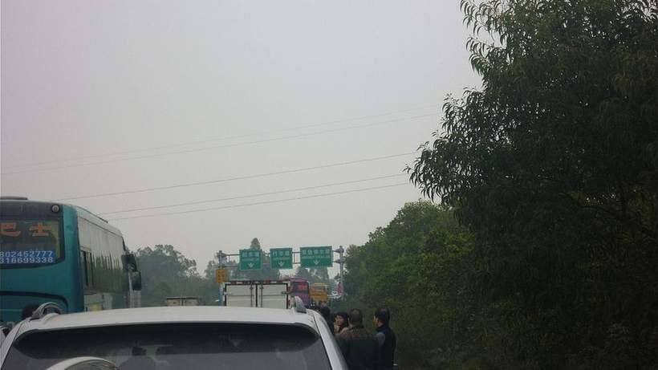
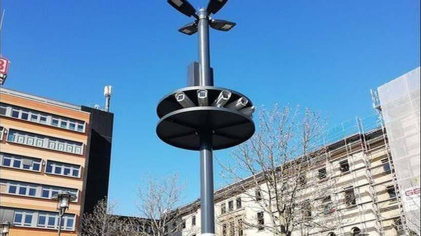

T0公交请求优先
晚点 90 秒

CS
COMPLEX SYSTEMS ENGINEERING · 2026
基于车路云系统的
未来城市交通规划
从任务到模块，从需求到风险
课程汇报 · 复杂系统工程 2026
汇报人：学生本人 · 2026-11-26 · 共 30 页
汇报人：学生本人 · 2026-11-26 · 共 30 页
目录 · CONTENTS
六个问题，一条线
先讲为什么做，再讲怎么拆、怎么定、怎么搭、风险在哪，最后看做到了什么
CHAPTER 01
为什么做
一个晚高峰路口，45 秒内的六个决定
P3 – P4
CHAPTER 02
系统怎么拆
任务 → 体系 → 整车 → 系统 → 子系统 → 模块
P5 – P12
CHAPTER 03
需求怎么定
业务、相关方、系统三册需求，121 条可验证
P13 – P17
CHAPTER 04
架构与安全
三层一底座，谁控制谁，危险藏在哪里
P18 – P23
CHAPTER 05
场景与风险
四层场景、运行条件、12 条风险场景
P24 – P28
CHAPTER 06
收口
一条线追溯、交付物、做到与没做到
P29 – P30
按 ← → 翻页 · F 全屏 · T 目录 · Esc 关闭
为什么做 · 一个真实的路口
45 秒里，
系统要做 6 个决定
公交晚点 90 秒、电动车要闯灯、网络突然抖到 320 毫秒——三个偶然叠在一起
- T0 公交车请求优先通行：给，还是不给
- T0+2 秒 延长绿灯 6 秒，还是让公交自己等
- T0+3 秒 电动车越过停止线：让行，还是只提示
- T0+5 秒 网络劣化到 320 毫秒：建议还发不发
- T0+11 秒 劣化满 5 秒：降级，还是硬撑
- T0+14 秒 电动车已退出：撤，还是不撤
这六个决定，就是这套系统存在的理由。
夜间路口：机动车、非机动车、行人共用同一时空时延以毫秒（ms）计；320 毫秒意味着一辆车以 40 公里时速又前进了约 3.5 米
为什么做 · 方法
五步一条链，每步都有标准兜底
不拍脑袋，按国际标准把「想法」变成「可验证的条目」
① 业务需求
业务为什么存在、要什么结果
→
② 相关方需求
谁受影响、各要什么、凭什么判断
→
③ 系统需求
系统输出什么、性能多少、怎么验
→
④ 架构
由哪些部分组成、谁控制谁
→
⑤ 安全与场景
什么条件下会出事、怎么兜住
依据的标准
需求用 ISO/IEC/IEEE 29148（需求工程）；过程用 ISO 15288（系统生命周期）；安全分析用 STPA（系统理论过程分析）；场景用 ISO 34501 / 34502 与 PAS 1883（运行设计域分类）。
一条链的价值
每个结论都能往上问「依据是什么」、往下问「怎么验证」。评审时不用听故事，直接翻编号。
STPA：一种从「控制行为会不会出错」出发的安全分析方法，不依赖零件失效概率
02
系统怎么拆
同一个系统，六种问法。越往上问「为什么」，越往下问「怎么实现、怎么验」。
本章内容
- 六层分解
- 任务层：四件难事
- 体系层：7 + 1
- 整车与系统层
- 10 个子系统 / 16 个模块
系统怎么拆 · 六层
六层分解
上一层定目标与边界，下一层给实现与约束
- 任务：城市为什么要建这套系统
- 体系：哪些业务系统要一起协同
- 整车：承载功能的物理实体（车、路侧机、云端机）
- 系统：本课题对象——车路云一体化系统
- 子系统：可独立开发、独立验收的 10 个单元
- 模块：可采购、可测试的 16 个最小单元
六层不是组织架构，而是「问题粒度」：同一件事在六层各有一个说法，且互相能对上
系统怎么拆 · 任务层
四件难事
少出事、少堵、少排放、能长期运营——四件事互相拉扯
- 安全：目标区域内交叉口事故率较基线下降 30%
- 效率：主干路行程时间下降 20%，路口延误下降 20%
- 绿色：单位里程能耗与排放下降
- 可运营：能复制、能运维、能按效果付费
- 边界：不承诺全场无人驾驶，不替代执法

拥堵的代价：时间、能耗、事故风险同时上升基线：立项时确定的现状数值；没有基线就无法判断「下降 30%」是否达成
系统怎么拆 · 体系层
7 个业务 + 1 个底座，不是 8 个并列业务
底座是共用的、被依赖的；把它当第 8 个并列业务，就会出现「谁都不对底座负责」
业务 01
交通管理
信号配时、事件处置、执法辅助
业务 02
公交运营
优先通行、到站预测、准点考核
业务 03
应急救援
绿波通道、路径保障、现场回传
业务 04
停车与充电
车位引导、充电排队、错峰
业务 05
货运物流
预约通行、限行绕行、装卸调度
业务 06
设施运维
设备健康、工单闭环、备件
业务 07
出行服务
路况发布、诱导分流、事件提醒
底座
车路云底座
一张网、一张图、一套身份：7 个业务共用
体系（SoS，系统的系统）：多个独立运行、目标各异的系统，通过接口协同完成单系统做不到的事
系统怎么拆 · 整车层
三台「整机」承载全部功能
车、路侧、云端各是一台可交付的机器，接口在机器之间
01
智能网联整车
车载单元、协同驾驶域控、独立安全监控、人机界面、执行器接口；不含底盘本体。
02
路侧一体机
感知融合、边缘计算、路侧通信、杆件与供电；杆件新增载荷不超过 30 公斤，防护等级 IP65。
03
云端整机
区域机房或市级中心：交通态势、事件中心、协同决策、地图与安全认证。

路侧杆件：摄像机、通信单元、边缘计算共用一根杆，供电与承重是硬约束IP65：防尘 6 级、防水 5 级，可露天长期工作；边缘计算（MEC）：装在路口机柜里的小型算力
系统怎么拆 · 系统层
本课题的对象
车路云一体化系统：把三域的感知、决策、执行连成一个闭环
- 做什么：超视距感知、协同决策、事件闭环、全局调度
- 边界：到车辆执行器接口为止；不含底盘设计与自动驾驶算法的形式化证明
- 凭什么算一个系统：能独立交付、独立验收，对外提供一项完整能力
车端
实时执行：≤ 70 毫秒闭环，本地校验、能拒绝云端建议
路端
兜底补齐：融合多源感知，断网仍能自治 5 分钟
云端
全局优化：跨路口协调、事件闭环，只建议不直控
① 路侧感知
摄像头 / 毫米波 / 激光雷达融合，输出目标与事件
② 边缘与云端决策
判断冲突、生成建议、必要时下发降级
③ 车端执行
校验建议、融合本地感知、必要时拒绝
④ 效果回流
排队、行程时间、事件结果回到云端形成闭环
三域：车端（车上）、路端（路口）、云端（机房）；闭环＝结果能回到决策端并被使用
系统怎么拆 · 子系统层
10 个子系统，可独立开发独立验收
划分原则只有两条：职责单一、接口清晰
车端 3
感知 / 通信 / 决策
SS-01 车载感知、SS-02 车载通信、SS-03 车载决策控制
路端 3
感知 / 通信 / 边缘
SS-04 路侧感知融合、SS-05 路侧通信、SS-06 边缘计算
云端 3
平台 / 地图 / 调度
SS-07 云控平台、SS-08 高精度地图、SS-09 全局协同调度
全域 1
安全认证
SS-10 证书、签名、密钥生命周期；阻断伪造消息
接口约定先行
跨子系统只通过已定义的接口发生交互：V2X 消息集（BSM 车辆状态、MAP 地图、SPaT 信号、RSI 路侧信息）、5G 空口、时间同步与坐标基准。接口没定清楚，子系统就无法独立验收。
V2X：车与外界通信；BSM 是车辆状态广播，SPaT 是信号灯相位与倒计时，RSI 是路侧事件提示
系统怎么拆 · 模块层
16 个模块，采购与集成的最小单元
每个模块都有可写进合同的关键指标
| 模块 | 关键指标 |
|---|---|
| 摄像头 | ≥ 8 百万像素 / 30 帧每秒 |
| 毫米波雷达 | 探测距离 ≥ 250 米 |
| AI 融合计算 | ≥ 100 万亿次每秒，≥ 30 帧 8 路 |
| 时钟 | 全网误差 ≤ 1 微秒 |
| 线控执行器 | 制动 ≤ 100 毫秒，转向 ≤ 150 毫秒 |
模块最终都要装进杆件与机柜：载荷、供电、散热决定可行性
TOPS：每秒万亿次运算，衡量车载或路侧算力；线控：用电子信号代替机械连杆控制刹车与转向
03
需求怎么定
三册文档回答三个问题：业务要什么结果、相关方各要什么、系统输出什么。共 121 条系统需求，每条都能验。
本章内容
- 业务过程与规则
- 24 类相关方
- 121 条系统需求
- 三个数字一条链
需求 · 第一册
先说清业务怎么运转
业务过程定了，系统才知道自己该在哪个环节出现
- 10 条业务过程：监测、事件处置、信号协调、公交优先、协同驾驶、出行信息、设施运维、评价结算、数据治理、安全应急
- 6 条业务规则：安全优先于效率、人机双确认、分级授权、降级不中断、变更可回滚、证据可审计
- 8 条任务需求：把目标翻译成「业务上要发生什么」
一条链的样子
目标 少出事（OBJ-01）→ 任务需求 冲突发现与预警（MR-01）→ 相关方需求 冲突识别率 ≥ 99%（SR-17）→ 系统需求 场景库识别率 ≥ 99%（SY-P-06）。
每一级都能回答「上一条依据是什么、下一条怎么验」。
OBJ 业务目标、MR 任务需求、SR 相关方需求、SY 系统需求：四套编号，一册一个前缀，可跨册追溯
需求 · 第二册
24 类相关方，25 条相关方需求
最容易被漏掉的两类人，往往最影响成败
指挥与交管 · 7
要「看得全、报得准」
指挥中心、交警、应急、公交调度…少误报、可追溯
运营与运维 · 8
要「故障可定位」
路侧运维、云平台、停车、充电、货运…责任边界清楚
出行者 · 5
要「提示可信不打扰」
驾驶员、乘客、骑行者、行人、施工人员
监管与受影响 · 4
要「合规不越权」
政府、网信、标准检测、沿线居民与商户
易漏一：施工养护单位
施工会直接改变运行条件（车道封闭、临时管制）。不纳入流程，系统会按旧地图做出错误判断。
易漏二：通信运营商与地图商
他们本身利益中性，但一旦不配合，系统直接不可用——所以要用合同锁定接口与服务水平，而不是口头协调。
相关方：能影响系统、或被系统影响、或为系统提供条件的个人与组织；共 24 类
需求 · 第三册
121 条系统需求，13 类
每条都有优先级、验证方法、上游追溯
- 功能 20（SY-F）· 性能 14（SY-P）· 接口 15（SY-I）
- 安全 18（SAF）· 信息安全 8（SEC）：功能安全与网络安全分开写
- 运行 6（SY-O）· 模式 6（SY-M）· 环境 6（SY-E）
- 生命周期 8（SY-L）· 可用性 5（SY-U）
- 物理 5（SY-PH）· 法规 5（SY-R）· 包装运输 5（SY-PK）
- 合计 13 类 121 条，条条有优先级与验证方法
数量最多的五类
功能 20
性能 14
接口 15
安全 18
信息安全 8
20+14+15+18+8+6+6+6+8+5+5+5+5 = 121；SY 前缀 95 条 + SAF 18 + SEC 8
需求 · 指标口径
三个数字串成一条链
100 和 300 不是两个拍出来的目标，而是两条加法算式的结果
车端闭环
70 ms
感知 30 + 决策 20 + 执行 20
端到端本地
100 ms
车端 70 + 融合 20 + 余量 10
云端协同
300 ms
融合 15 + 上行 40 + 决策 80 + 下发 30 + 执行 30 + 余量 105
为什么必须拆开写
如果只写「端到端 100 毫秒」，供应商无法分配预算，测试也无法定位是哪一段超了。拆成六段之后，每一段都能单独测：抓包测空口、打点测决策、台架测执行。
余量：留给抖动、重传、调度抖动的安全垫；P95：95% 的样本不超过该值
04
架构与安全
先看系统怎么搭、谁控制谁，再看这些控制动作在什么条件下会变成危险。
本章内容
- 三层一底座
- 三个关键决定
- 控制结构与受控过程
- 损失、危险、UCA
- 18 条安全需求
架构 · 总图
三层一底座
云做全局、路做兜底、车做执行，通信/时间/安全三项做成公共底座

云控平台只出建议不直控车辆与信号；路侧断网仍能自治 5 分钟；车端保留本地校验
架构 · 决策
三个关键决定
每条决定都能说出「不这么做会怎样」
ADR-01
只建议，不直控
云控下发的是建议，由车端校验、驾驶员或交管确认。反过来（云端直控）一旦断网或误判，责任与后果都无法承受。
ADR-03
路侧断网自治
边缘计算本地缓存 5 分钟，断网时仍能维持路口基本秩序。反过来（全依赖云）5G 一抖，路口就瘫。
ADR-05
安全单元独立
安全监控用独立单片机、独立供电、独立时钟。反过来（与域控同芯片）一旦共因失效，监控和被执行者一起死。
还有一条容易被忽略
信号优化方案必须经交管人工确认才生效——因为配时与执法的责任在交管部门，系统只能提供建议。
架构册共 6 条 ADR，这里挑 3 条最能说明取舍的（ADR-02、ADR-04 见架构册 1.7）；共因失效：同一原因同时让两个部件失效
架构 · 控制结构
5 个控制器，3 个受控过程
做安全分析之前，必须先画清「谁给谁下指令、谁给谁回执」

实线＝控制动作（下发），虚线＝反馈（上行）；C1 云、C2 路侧、C3 车端、C4 驾驶员、C5 交管
安全 · 第一步与第二步
先列损失，再列危险，最后落到动作
不谈「哪个零件坏了」，只问「什么算不可接受的结果、什么动作会把它做出来」
五类损失（结果）
LOS-01 人员伤亡 驾驶员、乘客、骑行者、行人、施工人员
LOS-02 财产损失 车辆、路侧设施、道路资产
LOS-03 服务中断 大面积拥堵、应急通道被阻断
LOS-04 信任与隐私 误报滥用、数据泄露
LOS-05 合规风险 违规采集、越权控制、证据缺失
六条危险（系统状态）
HAZ-01 协同建议导致车辆间冲突
HAZ-02 错误的优先／配时建议导致路口冲突
HAZ-03 运行条件越界未及时降级
HAZ-04 事件漏报或误报导致资源错配
HAZ-05 降级过程中失去最小风险状态
HAZ-06 数据或身份被伪造导致错误信任
该提供却没提供（3）UCA-07 检测到失效未降级｜UCA-11 未进入最小风险状态｜UCA-14 驾驶员未响应接管
提供了不该提供的（3）UCA-01 运行条件不满足仍下发｜UCA-06 路侧故障仍下发建议｜UCA-09 未校验签名即执行
提供了但内容错（4）UCA-02 融合错误、时钟失步｜UCA-05 施工未同步仍判满足｜UCA-08 误检被当作障碍物广播｜UCA-12 未核对态势即确认配时
太早或太晚（4）UCA-03 建议到达已过时｜UCA-04 未通过冲突点即撤销｜UCA-10 接管提示过晚｜UCA-13 管控发布滞后
UCA（不安全控制动作）四类：未提供 3 条、提供不该提供的 3 条、内容错 4 条、时机不当 4 条，合计 14 条
安全 · 第三步
18 条安全需求，四层防线
预防 → 检测 → 缓解 → 恢复，再加一条独立安全通道
① 预防 · 不让危险动作发生
下发任何建议前完成运行条件校验（SAF-01）；建议必须带签发者、时间窗、地理范围与签名，缺一项即丢弃（SAF-02）；剩余有效期不足 500 毫秒必须丢弃（SAF-03）；信号方案只能作为建议、经交管人工确认（SAF-04）。
② 检测 · 出事前发现不一致
双传感器、双算法交叉校验，任一失效可检出（SAF-08）；时钟偏差超过 1 微秒即退出协同；检测到数据冲突、验签失败等不可信状态，500 毫秒内停止对外建议（SAF-06）。
③ 缓解 · 把后果限制住
车辆必须部署独立安全监控，越界即接管并触发最小风险状态（SAF-05）；降级必须车、路、云协同执行并给出统一提示（SAF-07）；限速与加大间距作为最后一道被动防线。
④ 恢复 · 事后可复盘可还原
原始帧、决策输入、人工操作全部留存并防篡改（SAF-10）；证据包可导出；灰度与变更可一键回滚；变更全程审计。
独立安全通道
安全监控单元用独立单片机、独立电源、独立时钟，与协同驾驶域控物理隔离——共因失效时它仍能工作。
等级怎么来
按严重度 × 暴露度 × 可控性定级：SAF 多数定在 ASIL B——单点失效不能直接导致伤亡，但仍需独立监控与降级路径。
为什么分四层
只靠预防不现实，只靠缓解太被动。四层叠加后，任何单层失效都还有下一层兜住。
ASIL：汽车安全完整性等级，B 级要求单点故障可控；MRM：最小风险状态，如减速靠边并交还驾驶员
05
场景与风险
需求说「要做什么」，场景说「在什么条件下做」。条件写不清，验收就说不清「算不算通过」。
本章内容
- 四层场景与八类要素
- 运行设计条件
- 45 秒实况
- 12 条风险场景
场景 · 分层
四层场景
同一个路口，四个粒度讲四件事
- 任务场景 6 个：组织层要办成什么事（干线路协调、事故处置、公交优先…）
- 功能场景 12 个：系统要输出什么能力（冲突预警、建议让行…）
- 逻辑场景 6 个：把要素写成参数区间（流量 600–2400 辆/时）
- 具体场景 3 个：每个参数取定值，可回放、可测试
八类要素：道路设施、交通参与者、环境、通信算力、任务运营、车辆设备、人员、数据合规
场景不是「故事」，是带参数的测试用例；逻辑场景给区间，具体场景给点值
场景 · 运行条件
什么条件下才能开
三档条件 + 六种运行模式 + 谁在岗，缺一项就不许开
允许
主干路、已布设路侧设备、无雨或小雨、照度 ≥ 50 勒克斯、网络往返 ≤ 150 毫秒
受限
网络 150–300 毫秒只读建议；照度 30–50 勒克斯限速；施工绕行
禁止
网络 > 300 毫秒持续 5 秒、能见度 < 30 米、地图过期 > 7 天、时钟偏差 > 1 微秒
六种运行模式（MODE-0 ~ MODE-5）
正常 → 局部降级 → 只读建议 → 单车道辅助 → 最小风险 → 人工接管。每种模式都写明「允许哪些场景、禁止哪些控制动作」。
能见度低于 30 米即判为禁止条件：此时系统只做减速提示，不参与协同决策
ODD（运行设计域）：系统被设计为可安全运行的边界条件集合；勒克斯（lx）是照度单位，50 lx 约等于黄昏路面
场景 · 实例
45 秒实况
公交优先 + 电动自行车闯灯 + 网络抖动，三个偶然叠在一起
T0+2 s建议延长绿灯
6 秒
6 秒
T0+3 s电动车越线
TTC 2.1 秒
TTC 2.1 秒
T0+5 s网络 320 毫秒
丢包 8%
丢包 8%
T0+11 s劣化满 5 秒
降级切 PC5
降级切 PC5
T0+14 s退出冲突区
撤销让行
撤销让行
系统做了什么
先给优先建议，再识别冲突并降速提示，检测到网络超时后停止云端建议、切到直连与本地闭环，最后在冲突解除后逐步恢复。T0+30 秒通信恢复后回到正常模式。
差点出什么事
如果建议在 T0+11 秒继续下发，公交会在延迟信息基础上加速；如果 T0+14 秒不及时撤销，电动车仍在路口时公交已恢复加速。
TTC（冲突时间）：按当前速度与方向，两车到达冲突点的时间差；2.1 秒已低于安全阈值
场景 · 风险清单
12 条风险场景，2 条不可接受
不可接受的两条，靠改设计解决，不靠加一句提示
R4 · 不可接受
RS-01 公交撞上闯灯电动车
云端往返延迟 > 300 毫秒且冲突出现 3 秒内，让行建议未及时到达，公交按旧相位加速通过。对策：冲突识别改由路侧本地闭环，建议改走直连优先通道。
R4 · 不可接受
RS-05 逆光 + 逆行非机动车漏检
照度 < 80 勒克斯、目标横向速度 > 4 米每秒时，感知漏检。对策：非机动车专用检测模型 + 低照度下降级限速 40 公里/时。
其余 10 条的分级
R3 需缓解（6 条）：建议到达过晚、劣化期间继续下发过期建议、撤销过早、优先相位未确认即生效、接管提示被导航语音掩蔽、指挥员界面信息过载。
R2 需监控（3 条）：优先后未恢复配时、双源判断冲突、灰度版本不一致。
R1 可接受（1 条）：证据不完整（有审计兜底）。
处置顺序
① 两条 R4 必须试点前闭环，且不允许用「界面提示」替代设计变更；② R3 进入版本迭代清单，每条对应一个验证方法；③ R2 纳入运行监控指标，按季度复盘。
分级＝严重度 S × 暴露度 E × 可控性 C；R4 不可接受、R3 需缓解、R2 需监控、R1 可接受
收口 · 全链条
一条线走到底
任意一条需求，都能双向追到「为什么」和「怎么验」
OBJ-01
少出事
→
MR-01
冲突发现与预警
→
SR-17
识别率 ≥ 99%
→
SY-P-06
场景库识别率
→
SAF-08
双源交叉校验
→
RS-05
逆光+逆行漏检
反向问法
看到任何一条需求，都可以问三句：这是谁提的？落在哪个组件上？用什么方法验？答不上来，说明链条断了。
交付物
四册文档（需求两册、系统需求、架构与安全、场景与风险），网页与 Word 双形态，统一编号，可折叠目录、可分享锚点、可打印。
OBJ / MR / SR / SY / SAF / RS：六套编号分属六类对象，跨册引用不重复编号
收口 · 自评
做到了什么，还差什么
概念阶段已经闭环，工程化才刚开始
已经做到
· 六层分解与四册文档可互相追溯，121 条需求每条有验证方法
· 架构决策有备选方案与取舍理由，控制结构可直接支撑安全分析
· 18 条安全需求与 12 条风险场景可回放到具体时刻与参数
· 网页与 Word 双形态交付，编号统一、可检索、可打印
还没做
· 指标尚未用现场数据标定（100/300 毫秒是预算值，不是实测值）
· 未做硬件在环与外场测试，12 条风险场景只做了桌面推演
· 未给出定量的安全目标（如每小时故障率、每次干预的事故率）
· 成本与分期只到「单路口 ≤ 35 万元」的量级，未做全生命周期测算
下一步三个方向
① 用试点路口数据标定时延与识别率；② 把两条 R4 的措施落到硬件与算法规格；③ 补定量安全目标与全生命周期成本，形成可验收的合同条款。
谢谢 · 欢迎提问：可以就指标标定、风险措施落地、成本与分期任选一条深入